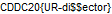

886 points, GATE 5, 20 SOLVES as of solving
LET THE GAMES BEGIN!
MD5("DissectMe.exe"): 375c9a7f0b6145955989bbd47ed2630e
You just need to change the extension to .zip, and open .rsrc/0/BITMAP/FLAG.bmp. The inspiration for this comes from opening .exe files in Mac OS X, as their default response is to unzip it instead of running it.

CDDC20{UR-di$$ector}